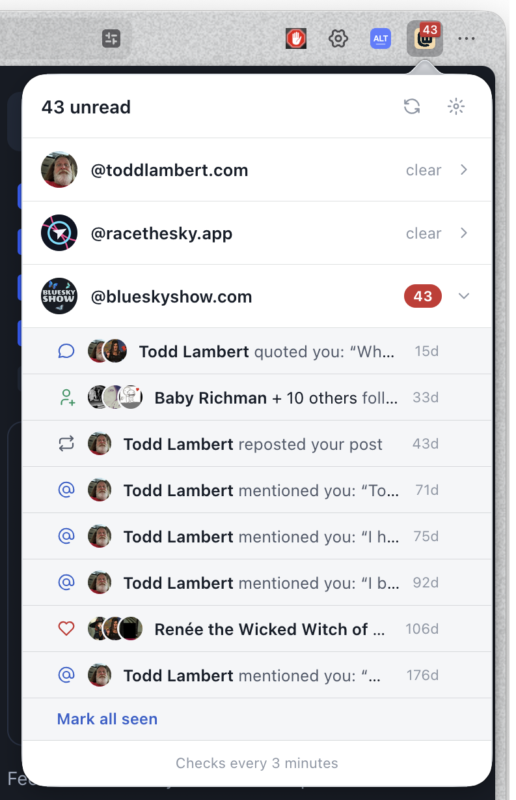
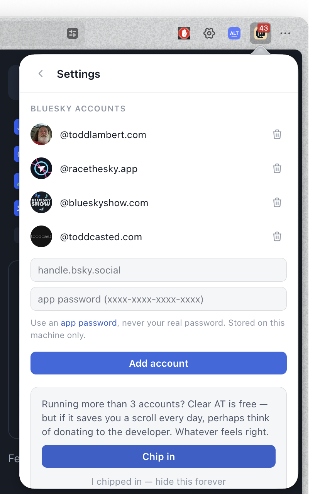

clear your @s
One badge for all your notifications — every Bluesky account you run, plus RSS and YouTube. Triage at a glance, act on the site it came from.
On iPhone or iPad? Open the web app in Safari, tap Share, then Add to Home Screen — Clear AT becomes its own app icon.


The toolbar badge totals unread across every Bluesky account you add — no logging in and out, no pile of tabs.
Replies and mentions show their text. Likes group up — "Dame + 3 others liked" — with the post they're about. Seven notifications read like three decisions.
Every row opens on the site it came from — reply, follow back, or watch, right where it happened.
"Mark all seen" syncs with Bluesky itself, so the badge clears in the official apps too.
Your feeds and channel subscriptions get their own rows in the same badge. Paste a YouTube channel URL — done.
Filter out the notification types you don't care about. Likes off, mentions on — your call.
Clear AT has no backend — your app passwords stay in your browser and talk only to your own accounts' servers. Nothing is collected, because there is nowhere to collect it. Read the privacy policy.
If Clear AT saves you a scroll every day, chip in whatever feels right.
Chip in